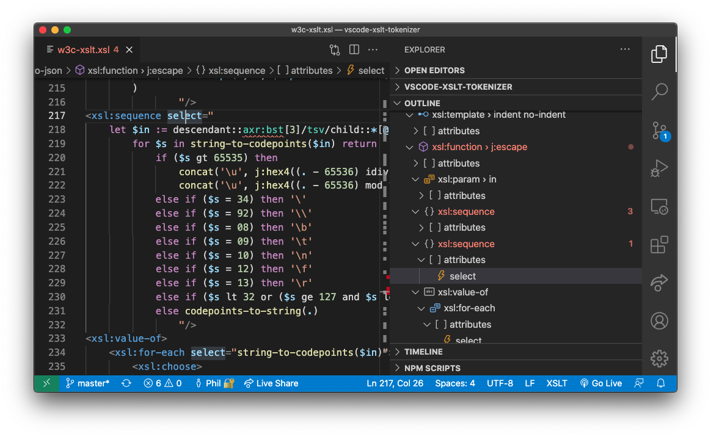
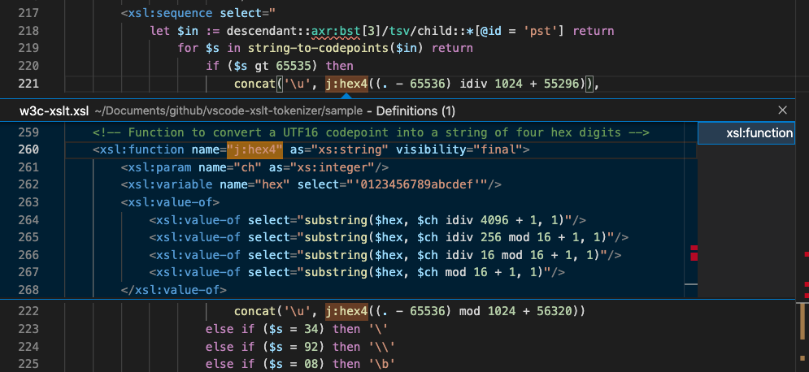
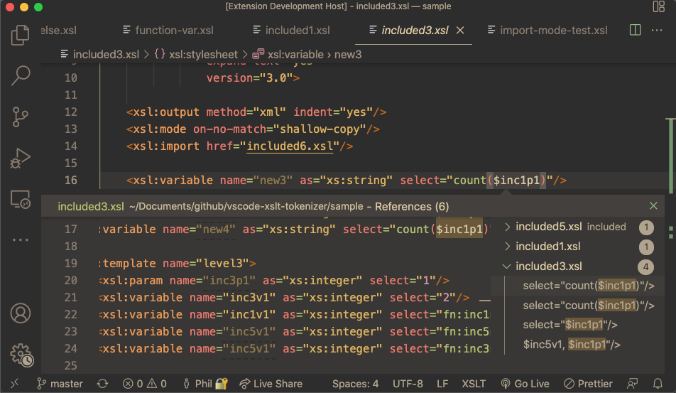
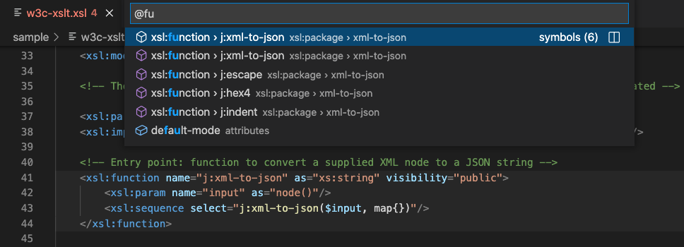

Code Navigation
Visual Studio Code includes a compelling set of features for code navigation, the language-neutral details are outlined here.
This page outlines code navigation from an XSLT and XPath development perspective.
File Navigation
While the Explorer View is used for workspace browsing, pressing ⌘P, for the Quick Open command, provides a quick-pick list of available files that is filtered/highlighted as you type.
File tabs are arranged in one or more Editor Groups. Editor Groups are arranged either adjacent or above/below other Editor groups. The same file may be open in more than one Editor Group. There are settings to control whether file tabs are scrollable or wrapped within an Editor Group.
Hold Ctrl and press Tab for a list of files in an Editor Group. Keep pressing Tab until you reach the file you want and then release Ctrl to open it.
Previous/Next Location
Many actions can be used to navigate you to a new location. Press ⌃- for Previous Location and ⌃⇧- for Next Location. Locations may be in the same file or different files.
File Links
In XSLT, The href attribute values of xsl:import, xsl:include and xsl:use-package have a solid underline if the file path is resolved.
Press ⌘+Click on the file path to navigate to that file.
XSLT/XML Breadcrumbs
The Breadcrumb View, shown at the top of the editor, shows the current element or attribute location
within an XML or XSLT file with respect to ancestor elements. In XSLT Breadcrumbs, an identifier is often shown as well as the element name.
This may be for example the name of an xsl:variable or the mode of an xsl:template.
The symbol names are the same as those shown in the Outline view.
Clicking on a Breadcrumb item will show a dropdown Outline view which you can then navigate through with the mouse, touch or cursor keys.
Keyboard Navigation
Press ⇧⌘. (note the 'dot' character) to select the last Breadcrumb item and open with a dropdown outline. You can then use cursor keys to navigate the dropdown outline. Alternatively, press ⇧⌘; (note the 'semi-colon' character) to select the last Breadcrumb item without a dropdown outline. Use the ← and → keys to select a Breadcrumb item or the ↓ for the dropdown outline.
Outline View

The Outline View (see right-hand panel) is a panel
that, by default, is positioned below
the File Explorer in the Primary Side Bar. This can be moved however into other panels such as the Secondary Side Bar (see Sidebars).
The Outline view renders the XML or XSLT document element hierarchy as a tree, symbol names in the tree include element identifiers such
as the mode for an xsl:template.
Symbols in the Outline View can be sorted by position, name or category. There's also a 'Filter on Type' mode that filters the Outline View while you type in part of a symbol name.
Peek/Goto Definition
A symbol, such as a variable or function, is defined in one location in a stylesheet file, but used in other locations. The Peek and Goto commands let you either view inline or navigate to the definition of a selected symbol.
Peek Definition
Invoke the Peek Definition command by pressing (⌥F12) on any symbol name such as a variable or function name. This command embeds a view of the defintion inline avoiding the context-switch arising from the Goto Definition command. The inline definition view permits quick edits of the defintion also. Press Escape to close the definition view.
Goto Definition
Invoke the Goto Defintion command by pressing (F12) on any symbol name such as a variable or function name.
This command navigates you to the location of the symbol definition (for example, the corresponding xsl:variable instruction),
opening the containing stylesheet file in the editor group if not already open.
Goto (Peek) References/Find All References
This feature is about navigating to references to symbols, in contrast to the previous section that covers navigating to symbol definitions. The Peek and Find All commands let you either view inline or navigate through all the references (including the definition) of a selected symbol.
Goto (Peek) References
Invoke the Goto (Peek) References command by pressing (⇧F12) on any symbol name such as a variable or function name. This command embeds a view of the resolved references inline, use the cursor keys to navigate between each reference listed. The inline view permits quick edits of the reference also. Press Escape to close the references view.
Find All References
Invoke the Find All References command by pressing (⌥⇧F12) on any symbol. A References Panel, shown in the application Side Bar, lists all references, grouped by their stylesheet module. Use the cursor keys to move through the references and press Enter to open the editor in the reference location.
After navigating to a reference or definition, you can quickly navigate to the location you were in using Ctrl-
Goto Symbol
Use the Goto Symbol in Editor command Shift⌘O for a filtered quick-pick list of symbols used in the current editor. The text you enter filters the list, the ↑ and ↓ keys navigate you through the symbol list, with the current symbol item highlighted in the editor. Press Enter to navigate to the symbol in the current editor or ⌘Enter to open an adjacent editor and navigate to the symbol there.
